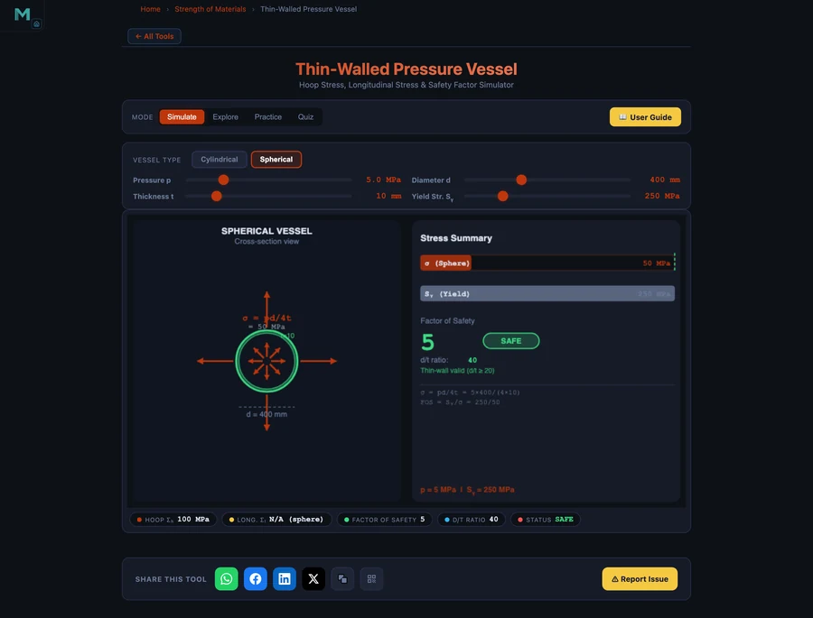

- Hoop (circumferential) stress is the largest stress in a thin-wall cylinder and equals σ_h = p·d / (2·t), where p is internal pressure, d is internal diameter, and t is wall thickness.
- Longitudinal stress is exactly half the hoop stress (σ_l = p·d / (4·t)), and a sphere carries only σ = p·d / (4·t) in every direction — making it twice as material-efficient as a cylinder.
- Thin-wall theory is valid only when d/t ≥ 20; the factor of safety is FOS = σ_y / σ_h, with FOS ≥ 3 considered SAFE for static pressure service.
Why Pressure Vessel Stress Analysis Matters
Pressure vessels store or transport fluids and gases under gauge pressure — from industrial boilers and chemical reactors to scuba cylinders and aerosol cans. When the pressure tries to expand the container, the walls resist with membrane stresses. Calculating these stresses correctly, and verifying an adequate factor of safety against the material's yield strength, is among the most safety-critical calculations in mechanical and chemical engineering.
Thin-wall theory (also called membrane theory) provides closed-form stress expressions that are accurate whenever the wall is thin relative to the vessel diameter — specifically when the diameter-to-thickness ratio d/t ≥ 20. The NHIT VisualLab Pressure Vessel Calculator applies these equations live, colour-codes the safety assessment, and lets you switch between a cylindrical and spherical geometry in one click.
Thin-Wall Theory: The Core Equations
For a thin-wall cylinder under internal gauge pressure p, internal diameter d, and wall thickness t, the two principal membrane stresses are:
Hoop (Circumferential) Stress
Hoop stress acts tangentially around the vessel circumference. It is found by equating the pressure force on a half-cylinder to the wall force that resists it:
This is the larger of the two principal stresses and is the governing criterion for cylindrical vessel design.
Longitudinal (Axial) Stress
Longitudinal stress acts along the axis, resisting the pressure force acting on the closed ends of the cylinder:
Longitudinal stress is exactly half the hoop stress — so a cylindrical shell is always twice as likely to split along an axial seam (hoop failure) than across a circumferential weld (longitudinal failure).
Spherical Vessel
A sphere develops equal biaxial stress in every direction because its geometry is symmetric about every axis. There is no "hoop" versus "longitudinal" distinction — both principal stresses are:
This is the same as the longitudinal stress of an equivalent cylinder, and only half the cylinder's hoop stress. A sphere is the most material-efficient shape for containing pressure.
Factor of Safety
The factor of safety compares the material's yield strength σy to the highest stress in the vessel:
The simulator colour-codes the result: FOS ≥ 3 is flagged SAFE, 1.5–3 is flagged CAUTION, and below 1.5 is flagged DANGER.
Minimum Wall Thickness Design Formula
Rearranging the hoop stress equation to find the minimum wall thickness for a required FOS:
This formula is used in preliminary design. For example, a cylinder with p = 5 MPa, d = 400 mm, σy = 250 MPa and a required FOS of 3 needs tmin = 5 × 400 × 3 / (2 × 250) = 12 mm minimum wall thickness.
Worked Example: Cylindrical Pressure Vessel (CAUTION)
Consider a compressed-air receiver — a cylindrical steel vessel with the following parameters:
- Internal pressure: p = 5 MPa
- Internal diameter: d = 400 mm
- Wall thickness: t = 10 mm
- Material yield strength: σy = 250 MPa (mild steel)
First, check the thin-wall condition: d/t = 400/10 = 40 ≥ 20, so thin-wall theory applies.
Hoop stress: σh = (5 × 400)/(2 × 10) = 100 MPa. Longitudinal stress: σl = (5 × 400)/(4 × 10) = 50 MPa. Factor of safety: FOS = 250/100 = 2.5 — within the CAUTION band.
A FOS of 2.5 is below the ASME-recommended design margin of 3–4 for this class of vessel. To bring it into the SAFE zone the wall thickness should be increased: treq = (5 × 400 × 3)/(2 × 250) = 12 mm. Enter these values in the simulator to see the colour-coded assessment update instantly.

Spherical Vessel: The Same Parameters, Half the Stress
Switch the simulator to sphere geometry while keeping all other parameters identical (p = 5 MPa, d = 400 mm, t = 10 mm, σy = 250 MPa). The membrane stress drops to σsphere = (5 × 400)/(4 × 10) = 50 MPa and the factor of safety doubles to FOS = 5.0 — comfortably SAFE.
This dramatic improvement explains why spherical pressure vessels are used for high-pressure gas storage in refineries and LNG terminals: the same wall thickness that gives FOS = 2.5 in a cylinder gives FOS = 5.0 in a sphere, or equivalently, the sphere can be built at half the wall thickness for the same safety margin. The trade-off is manufacturing cost — spheres are harder to fabricate than cylinders.
Thin-Wall vs Thick-Wall: Knowing the Limits
The membrane equations are accurate only within their stated range. As d/t drops below 20, the stress distribution through the wall becomes increasingly non-uniform — stress at the inner surface is significantly higher than at the outer surface. In this regime, Lamé's thick-wall equations must replace the thin-wall formulas.
The simulator tracks d/t automatically and displays the regime. If you decrease wall thickness until d/t < 20, the tool flags the condition and reminds you that thin-wall assumptions no longer apply. In practice, most process vessels, pipelines, and storage tanks operate well within the thin-wall range (d/t = 30–100), but hydraulic cylinders and gun barrels are common thick-wall applications.
Failure Modes in Pressurised Containers
Hoop burst failure — the most common catastrophic mode — occurs when σh reaches the material's ultimate tensile strength. The vessel splits along a line parallel to its axis, like a seam opening. This is why cylindrical vessels must be designed so that the hoop stress is the limiting criterion and welds on longitudinal seams receive more stringent inspection than circumferential welds.
Fatigue failure is critical for vessels subjected to pressure cycling. Even if the maximum hoop stress is well below yield, cyclic loading can initiate and propagate cracks at stress concentrations — nozzle connections, weld toes, and thickness transitions. ASME BPVC Section VIII Division 2 specifies fatigue assessment methods for cyclic service vessels.
Creep failure becomes relevant at elevated temperatures. At temperatures above roughly 0.4 × Tmelting (absolute), the material creeps under sustained stress even below yield. High-temperature boilers and heat exchangers require time-dependent stress analysis rather than simple yield-based FOS.
Using the Pressure Vessel Calculator
Open the Pressure Vessel Hoop Stress Calculator and explore these scenarios:
- Start with the cylinder default (p = 5 MPa, d = 400 mm, t = 10 mm, σy = 250 MPa). Observe σh = 100 MPa, FOS = 2.5 in the CAUTION zone. Note d/t = 40 — thin-wall assumption is valid.
- Increase wall thickness to t = 12 mm. Watch FOS climb to 3.0 — the boundary of SAFE. The live colour update makes the design threshold immediately visible.
- Switch to sphere. All parameters stay the same but σ drops to 50 MPa and FOS jumps to 5.0. Confirm the geometry efficiency difference visually.
- Change material — drag σy down to 200 MPa (softer steel). FOS falls to 2.0 CAUTION. Raise it to 350 MPa (alloy steel) to reach FOS = 3.5 SAFE.
- Simulate an over-pressure event — increase p to 8 MPa. σh reaches 160 MPa, FOS = 1.56 CAUTION, dangerously close to DANGER. This illustrates why relief valves and burst discs are mandatory pressure protection devices.
Engineering Design Takeaways
- Hoop stress governs cylinder design. σh = pd/(2t) is always the maximum principal stress in a cylindrical pressure vessel. Longitudinal stress at half this value is secondary.
- Spheres are twice as efficient. Equal biaxial membrane stress at σ = pd/(4t) means a sphere needs only half the wall thickness of a cylinder for the same FOS.
- Validate d/t ≥ 20 before applying thin-wall theory. Thick-wall vessels require Lamé equations; the thin-wall formula will under-predict peak stress.
- FOS ≥ 3 is a sound target for static pressure service. ASME and EN 13445 codes recommend margins of 3–4 on yield, accounting for material variability, weld efficiency, and inspection class.
- Temperature and cycling reduce effective FOS. Creep at elevated temperature and fatigue under pressure cycles demand additional analysis beyond static thin-wall stress.
Frequently Asked Questions
What is hoop stress in a pressure vessel?
Hoop stress (circumferential stress) is the tensile stress acting tangentially around the wall of a pressurised cylinder. For a thin-wall cylinder it equals σh = pd/(2t), where p is internal pressure, d is internal diameter, and t is wall thickness. It is always twice the longitudinal stress and governs the cylinder's pressure rating.
When is the thin-wall assumption valid?
The thin-wall (membrane) theory is valid when the diameter-to-thickness ratio d/t ≥ 20. Below this ratio the stress distribution through the wall becomes non-uniform and thick-wall (Lamé) equations must be used instead.
Why is hoop stress half as large in a sphere compared to a cylinder?
A spherical shell develops equal biaxial membrane stress in all directions: σsphere = pd/(4t). Because pressure is resisted by the full circumference in both meridional directions simultaneously, each direction only carries half the stress that a cylinder's hoop direction must carry, making a sphere inherently twice as efficient.
What factor of safety is required for pressure vessels?
ASME Boiler and Pressure Vessel Code (ASME BPVC) Section VIII typically requires a design factor of safety of 3.5 to 4.0 on ultimate tensile strength, or about 1.5–2.0 on yield strength. The simulator uses FOS = σy / σh and flags FOS ≥ 3 as SAFE, 1.5–3 as CAUTION, and below 1.5 as DANGER.
How do I calculate minimum wall thickness for a pressure vessel?
Rearranging the hoop stress formula gives minimum wall thickness tmin = p × d × FOSreq / (2 × σy). For example, a cylinder with p = 5 MPa, d = 400 mm, σy = 250 MPa, and a required FOS of 3 needs tmin = 5 × 400 × 3 / (2 × 250) = 12 mm.